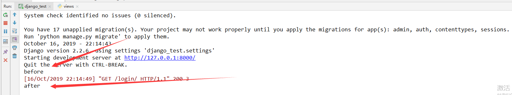

django视图之CBV的基本使用
CBV 和 FBV 是什么？
CBV: class base view
基于类的视图
FBV: function base view
基于函数的视图
我们在django基础中说到路由匹配是匹配到对应的函数，然后返回该函数对应的结果，而不是class。针对这个问题，django提供了一个类，我们写的类视图只需要继承这个类i，django就自动帮我实现http请求和类方面映射关系。
类视图的用法
在urls.py中定义路由规则（这里使用django 2.2 以上的版本）
from .views import LoginView
urlpatterns = [
path('login/', LoginView.as_view())
]
在views.py中编写类视图
from django.http import HttpResponse
from django.views import View
class LoginView(View):
def get(self, request, *args, **kwargs):
return HttpResponse('GET')
def post(self, request, *args, **kwargs):
return HttpResponse('POST')
不同的http请求方式去http://127.0.0.1:8000/login/ 就会执行类视图中对应的方法。
路由分发怎么做到的呢？
匹配到路由之后，首先执行LoginView.as_view() 方法， LoginView类不存在as_view() 方法，去父类找，父类（View）的as_view()源码如下：
class View:
"""
Intentionally simple parent class for all views. Only implements
dispatch-by-method and simple sanity checking.
"""
http_method_names = ['get', 'post', 'put', 'patch', 'delete', 'head', 'options', 'trace']
def __init__(self, **kwargs):
"""
Constructor. Called in the URLconf; can contain helpful extra
keyword arguments, and other things.
"""
# Go through keyword arguments, and either save their values to our
# instance, or raise an error.
for key, value in kwargs.items():
setattr(self, key, value)
@classonlymethod
def as_view(cls, **initkwargs):
"""Main entry point for a request-response process."""
for key in initkwargs:
if key in cls.http_method_names:
raise TypeError("You tried to pass in the %s method name as a "
"keyword argument to %s(). Don't do that."
% (key, cls.__name__))
if not hasattr(cls, key):
raise TypeError("%s() received an invalid keyword %r. as_view "
"only accepts arguments that are already "
"attributes of the class." % (cls.__name__, key))
def view(request, *args, **kwargs):
self = cls(**initkwargs)
if hasattr(self, 'get') and not hasattr(self, 'head'):
self.head = self.get
self.setup(request, *args, **kwargs)
if not hasattr(self, 'request'):
raise AttributeError(
"%s instance has no 'request' attribute. Did you override "
"setup() and forget to call super()?" % cls.__name__
)
return self.dispatch(request, *args, **kwargs)
view.view_class = cls
view.view_initkwargs = initkwargs
# take name and docstring from class
update_wrapper(view, cls, updated=())
# and possible attributes set by decorators
# like csrf_exempt from dispatch
update_wrapper(view, cls.dispatch, assigned=())
return view
看源码可以看出，as_view()方法
-
如果请求的方法没在
http_method_names中，则会抛出异常 。 -
又定义了一个函数
view,self = cls(**initkwargs)等价于self = LoginView(**initkwargs), 随后进行了一些属性绑定self.setup(request, *args, **kwargs)，再判断了self对象有没有request属性。
重点:调用self.dispatch(request, *args, kwargs) 方法。
python
def dispatch(self, request, *args, **kwargs):
# Try to dispatch to the right method; if a method doesn't exist,
# defer to the error handler. Also defer to the error handler if the
# request method isn't on the approved list.
if request.method.lower() in self.http_method_names:
handler = getattr(self, request.method.lower(), self.http_method_not_allowed)
else:
handler = self.http_method_not_allowed
return handler(request, *args, **kwargs)
从LoginView的request中获取请求方式， 如果request.method存在于http_method_names中，则使用getattr反射的方式来得到handler，再执行CBV中的方法并返回。
由此，可以知道如果在Django项目中使用CBV的模式，实际上调用了getattr的方式来执行获取类中的请求方法对应的函数
自定义dispatch方法
由上述的分析可知，任务cbv在执行代码前都会执行dispatch方法，所以dispatch可以当勾子使用，可以在请求url时在dispatch中定义一些行为。
from django.http import HttpResponse
from django.views import View
class LoginView(View):
def dispatch(self, request, *args, **kwargs):
print('before')
ret = super(LoginView, self).dispatch(request, *args, **kwargs)
print('after')
return ret
def get(self, request, *args, **kwargs):
return HttpResponse('GET')
def post(self, request, *args, **kwargs):
return HttpResponse('GET')
